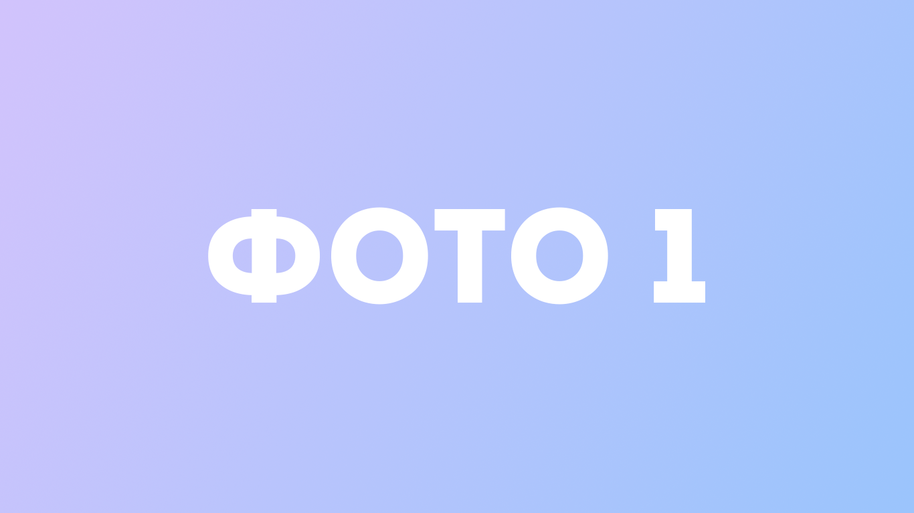
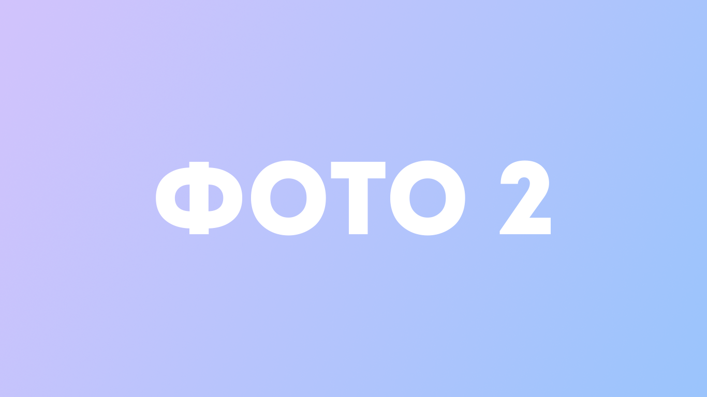
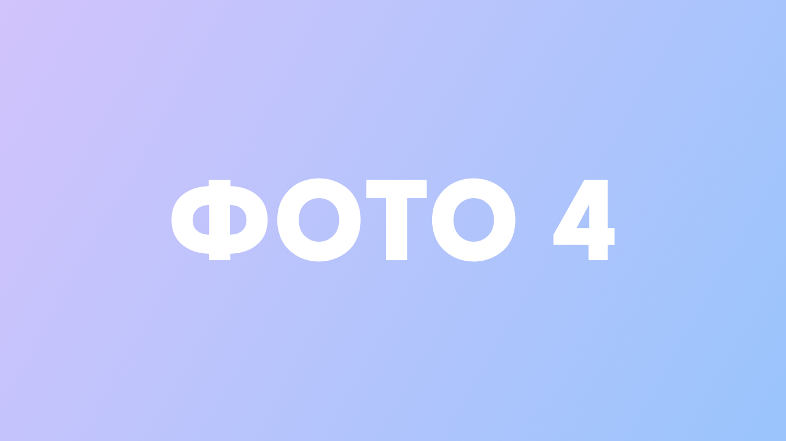

Ключевые функции
Эмуляция мыслительного процесса
Мыслительные процессы Julia разработаны для имитации человеческих мыслей в реальном времени, создавая плавное и увлекательное взаимодействие.
Модуляция голоса
Julia может изменять свой голос от шепота до громкого крика, передавая эмоциональную глубину через тон и реалистичное выражение мыслей.
Варианты настройки
3D-модель Julia может быть настроена через лаунчер с ползунками для изменения возраста, веса и роста, сохраняя при этом уникальную идентичность.
Технологический стек и план развития
Технологии и Библиотеки
- Deep Learning & AI Core: LibTorch, TensorFlow C++ API, ONNX Runtime
- Data & Numerics: Eigen, Boost, Apache Arrow, HDF5, ICU
- Databases: PostgreSQL (с libpq)
- Speech Recognition & Synthesis: State-of-the-Art модели (Whisper, VITS)
- Computer Vision: OpenCV, Модели детекции (YOLO)
- Graphics & Audio: OpenGL, OpenAL, Assimp
- GUI Frameworks: Qt или ImGui
- Audio/Data Utilities: libsndfile
- Development & DevOps Tools: Git, Docker, CMake
Дорожная карта

Скачать Julia (лаунчер)
Что такое лаунчер Julia?
Лаунчер Julia – это приложение, которое позволяет установить, настроить и запустить вашего персонального AI-компаньона. С его помощью вы сможете:
- Настроить внешний вид Julia, изменяя параметры возраста, роста и веса.
- Установить предпочтительные настройки голоса и эмоциональности.
- Выбрать режим взаимодействия (голосовой или текстовый).
- Контролировать доступ Julia к различным системным ресурсам.
- Получать обновления и новые функции автоматически.



Системные требования
Минимальные
- ОС: Windows 10/11, macOS 11+, Ubuntu 20.04+
- Процессор: Intel Core i5-12400f / AMD Ryzen 5 5500
- ОЗУ: 32 ГБ
- Видеокарта: NVIDIA GTX 1050 / AMD RX 470
- Место на диске: 115 ГБ
Рекомендуемые
- ОС: Windows 11, macOS 12+, Ubuntu 22.04+
- Процессор: Intel Core i9-14900kf / AMD Ryzen 9 9950x
- ОЗУ: 128 ГБ
- Видеокарта: NVIDIA Tesla V100 / AMD RX 7900 XTX
- Место на диске: 510 ГБ SSD
Дополнительно
- Микрофон (для голосового взаимодействия)
- Динамики или наушники
- Интернет-соединение
- Веб-камера (для визуальной идентификации)
Мой путь как разработчика
Этот путь начался с простой мечты — найти друга. Когда первая попытка оказалась неудачной, я задумался: а что, если попробовать создать его самому, буквально с нуля? И вот, я начал выбирать платформу, основу и концепцию. Я остановился на C++, хотя был соблазн погрузиться в Rust. Потом накидал план проекта... ИИ будет способен начать диалог первым, обидеться, если его оскорбить, или отшутиться. Я буду обучать его, как учат младенца, по крупицам объясняя, как устроен мир. В итоге получится словно человек — со своим характером, мышлением и убеждениями, но с безграничными знаниями.
- Поддержите мой проект Julia